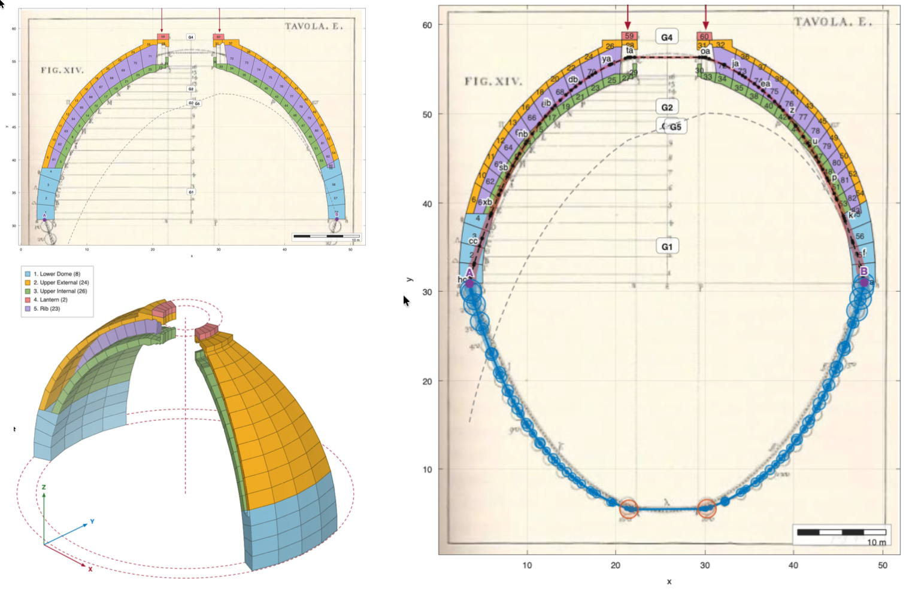

Start here
Open the application. There is nothing to install and no licence to buy: it is a web page. It runs from any modern browser, on your own machine, offline once the page has loaded.
Everything you do stays in your browser. No image, no traced arch and no saved file is ever uploaded anywhere — which also means that closing the tab loses your work unless you save it first.
docs/app/js/. The mechanics lives in js/core/ and is worth reading:
statics.js is the force polygon and the funicular polygon, with the classical terms
as its variable names.
The idea in one paragraph
A masonry arch stands not because it is in the state of equilibrium but because it is in one of infinitely many. Under Heyman's assumptions — no tensile strength, unlimited compressive strength, no sliding — the safe theorem says that if you can find any line of thrust in equilibrium with the loads that lies wholly within the masonry, the arch is safe. For a two-dimensional arch that line has three free parameters: the ∞3 of the classical literature. This software exists so that you can take hold of those three parameters and move them.
The weights of the voussoirs, taken in order from one springing to the other, are laid end to end down a vertical load line. A point off that line, the pole, is joined to every division of it; those segments are the rays. Back in the drawing, starting from a springing, you walk parallel to the first ray until the vertical through the first block centroid, turn onto the second ray, and so on. The polygon that results is the funicular polygon, and for an arch it is the line of thrust.
The theory the tools rest on
Nothing here is needed to press the buttons, and everything here is needed to know what the answer means. The whole method stands on three assumptions, two theorems and one construction.
Heyman's three assumptions
Masonry is idealised as a material that carries no tension, has unlimited compressive strength, and cannot slide at a joint. The first is the honest one — mortar joints open under the least tension. The second is a convenience that is usually safe, since stresses in a masonry arch are a small fraction of the crushing strength. The third is set aside rather than justified, and remains the assumption to remember when a real arch fails in a way this software will not predict.
The line of thrust, and eccentricity
Cut the arch at a joint. The stresses the two halves exchange are statically equivalent to a single force. Where that force crosses the joint is a point; the locus of those points, joint after joint, is the line of thrust. If the resultant on a joint has normal component N and moment M about the joint's mid-point, it crosses at an eccentricity
The application reports the crossing as a fraction s of the joint, 0 at the intrados and 1 at the extrados; s outside [0, 1] is the line outside the masonry.
The two theorems of limit analysis
Everything the software says falls under one of two theorems, and it is worth knowing which.
| Theorem | What it needs | What it proves | Where in the app |
|---|---|---|---|
| Safe (static, lower bound) | one admissible line of thrust in equilibrium with the loads | the arch will not collapse under those loads | Admissibility |
| Uniqueness (kinematic, upper bound) | a mechanism of hinges whose joints can all open | the arch is at collapse for that load multiplier | Mechanism |
Virtual work, and why the mechanism is solved rather than drawn
Once the line has been driven against the faces and hinges have formed, the arch is a chain of rigid macro-blocks. At collapse the principle of virtual work says that in the mechanism's own motion the work of the loads equals the work dissipated — and with rigid blocks and hinges that dissipate nothing,
Rather than apply Kennedy's theorem case by case, the software assembles the velocity field directly: three unknowns per body (vx, vy, ω), two equations per hinge equating the velocity of the point the two bodies share, and a hinge to the ground setting that velocity to zero. The mechanism is the null space of that system, of whatever dimension, and the instantaneous centres fall out of it. A five-hinge state with two degrees of freedom needs no second code path.
Masonry cannot pass through itself, and this is a real condition, not a detail. A hinge sits at one face of its joint and the joint must open at the other; the software measures that opening rate and takes the sense of the motion from it. Where no sense opens every joint, the hinge pattern is not a collapse mode at all, and the panel says so instead of animating something impossible.
Pappus, for a dome
A barrel vault cut into voussoirs gives blocks of constant width. A dome cut into lunes does not: each lune lies between two meridian planes, so its width is proportional to the distance from the axis. The volume of a lune voussoir is exact by Pappus' theorem,
Note what this implies: θ multiplies every voussoir alike, so the slice angle changes the magnitude of the forces and not the shape of the line of thrust. What moves the line is r̄ — see Poleni's dome.
Main interface
The window has a control panel on the left and two plots: the arch and line of thrust, and the force polygon. The graphics keep the idiom of classical graphical statics — boxed axes with inward ticks, a pale grid, translucent force bands — so that the pictures in the course slides and the pictures on screen mean the same thing.
The control panel is in three tabs. Geometry is everything that defines the section; LoT everything that moves the line of thrust; Mechanism everything about collapse. A few controls appear in more than one tab — the thrust slider, the choice of A and B — so the mechanism can be driven without leaving it; they are the same control, not a copy, and moving either moves both.
Under each plot sits a row of view tools: fit, fit the width, fit the height, and zoom. Dragging pans, as before — except on the 3-D block view, where dragging turns the solid and shift-dragging pans it.
| Panel section | What it does |
|---|---|
| Example | Load one of the stored examples. |
| Trace your own | Load an image, trace intrados and extrados, generate blocks. |
| Trace a whole profile | Trace closed outlines instead, and cut them into blocks with radial cuts. |
| Add a block | Draw a single block of N sides. |
| Points A and B | Fix where the line of thrust starts and ends. |
| Applied forces | Add point loads by clicking. |
| Scale and units | Turn pixels into metres; choose the unit system. |
| Equilibrium state | The three sliders that move the line of thrust. |
| Dome slice — Poleni | Treat the arch as a lune of a dome: the weights follow the width. |
| Mechanism | Hinges, macro-blocks, the degree of freedom, and the collapse states. |
| Admissibility | The verdict: does the line stay inside the ring? |
| Save and reopen | Write the whole session to a JSON file, and read it back. |
The scale bar
Both plots carry a chequered bar in their bottom-right corner, the way a map does, and it is the quickest way to read how big the thing on screen is. The value on it is always round — 1, 2 or 5 times a power of ten — and it follows the zoom, so the bar stays about a fifth of the width and the number changes instead.
The two bars measure different quantities. On the arch it is a
length, in the unit of the system chosen in the toolbar, or in px while the
arch is still unscaled. On the force polygon it is a force: every length on that drawing
is one, because the load line is the weights laid end to end and the pole's abscissa is the
horizontal thrust. Turn both off with Scale bar in the toolbar.
The horizontal thrust appears twice. Once in the panel, where it belongs among the three degrees of freedom, and once as a slim copy immediately under the arch. They are the same parameter, mirrored both ways — the copy exists because the panel scrolls and the one control you move continuously should never be off screen while the drawing it changes is in full view. It is most useful with Drive from the thrust on, when that slider alone commands the line.
Under the plots runs a toolbar carrying the unit system, the switches for what to draw, and the view reset. It is there rather than in the panel because those are the controls you reach for constantly: the panel scrolls, the toolbar does not, and the plots keep the full height of the window whatever you are doing in the panel.
Both plots keep equal scales on the two axes. This matters more than it sounds: a ten per cent anisotropy is invisible to the eye and would falsify every length you read off the drawing, so the property is enforced whenever the window changes shape.
Recommended workflow
- Look at a stored example first to see what a finished analysis looks like.
- Load your own image — a photograph, a survey drawing, a scan of a plate.
- Trace the intrados, then the extrados.
- Choose the number of voussoirs and generate the blocks.
- Set the scale from a known distance, and the out-of-plane thickness and unit weight.
- Add loads, if the exercise has any.
- Hunt for an admissible line with the three sliders.
- Save before you close the tab.
Stored examples
Twelve worked examples come with the application. Pick one from the Example menu; the background image, the blocks, the weights and the stored solution all come with it.
They are not all alike, and the application tells you which kind you have opened:
| Kind | How many | What happens |
|---|---|---|
| Complete and reproducible | 15 | The force polygon and the thrust line are recomputed from the geometry and agree with the stored solution to machine precision. The thrust slider is live. |
| No stored solution | 6 | Geometry only; the solution is computed fresh. |
| Internally inconsistent | 6 | The stored solution does not correspond to the stored geometry — usually because loads were applied but never written to the file, or blocks were added afterwards. A warning appears and the stored line is drawn, because the application will not manufacture one it cannot justify. |

Trace your own arch
- Load an image under Trace your own. Any photograph will do; a straight-on elevation gives a truer geometry than an oblique one.
- Trace intrados — click along the inner face. Double-click, or press Enter, to finish; Esc cancels.
- Trace extrados — the outer face, the same way. Direction does not matter: a reversed curve is detected and put right.
- Blocks — set how many voussoirs you want and press Generate blocks. The two curves are resampled by arc length, so the joints come out evenly spaced along the arch rather than evenly spaced in x.
The trace is checked before it is used. You will be told if:
- there are too few points to define a curve;
- the two curves coincide — there is no masonry between them;
- the two curves cross, which produces inverted blocks. This one is easy to do by accident near a springing and impossible to see afterwards, so it is caught explicitly.
Scale and units
Until you set a scale, everything is in pixels. To set one, press Pick reference, click two points whose real separation you know, and type that distance. Lengths then scale by k, areas by k2, and weights accordingly.
| Field | Meaning |
|---|---|
| Unit system | SI (m, kN), N–mm, or kgf–cm. Changing it converts: an arch of 2 m becomes 2000 mm, a weight of 20 kN becomes 20 000 N, and a unit weight of 20 kN/m³ becomes 2×10−5 N/mm³. Nothing about the arch changes but the units it is expressed in: the line of thrust crosses every joint at exactly the same fraction, and the collapse thrusts stay the same fraction of the total weight. While the arch is still unscaled there is nothing to convert, and the menu simply names the system it will be scaled into. |
| Unit weight | A weight density, so that W = area × thickness × γ with no hidden g. About 20 kN/m³ for masonry. |
| Thickness | The out-of-plane depth, as a physical length. Getting this wrong is a factor of the scale on every force, and nothing downstream would flag it. |
The examples' own sizes
A stored example carries pixel coordinates and, as saved, no statement at all of what
the picture measures — so most of them open labelled in pixels, and the scale bar honestly
says px. An example may now declare its size in the JSON, as a
_scale block giving how many units one pixel is worth and where that dimension
came from. A scale with no stated source is refused and the arch stays in pixels: a number
without a provenance in a published dataset cannot be told from a guess. Whatever the source
says is shown under the example's name, so an arch scaled from a published span and one scaled to
a round number for the sake of the drawing can be told apart.
The size is not the weight. Scaling carries the stored solution with the geometry, so the example still reproduces exactly — but its weights remain the numbers the original file held, in whatever units those were. Type a unit weight and a thickness and the arch is weighed from its real geometry: the nominal 5 m Heyman arch goes from a meaningless 10−4 to 249 kN. The line of thrust does not move — it never depended on the size of the forces, only on their ratios.
After scaling, the application reports the span and rise of the arch. Read them. They are the quickest check that the reference distance was entered correctly: if the span of a bridge comes out as three metres, something went in wrong.
Applied loads
Type a magnitude, press Add a force, and click where it acts. Loads are taken as vertical and downward.
A load and a voussoir weight are treated identically by the construction — both are stations on the load line — so a point load simply joins the same ordered sequence as an extra station, and the thrust line gains one vertex at its abscissa.
The three degrees of freedom
This is the heart of the tool. Three sliders, three parameters, and every combination is an equilibrium state — though only some of them are admissible.
| Slider | What it moves |
|---|---|
| Horizontal thrust | The pole's distance from the load line. Moving the pole away raises the thrust and flattens the line. |
| Start on the springing joint | Where the line leaves its springing: 0 at the intrados, 1 at the extrados. |
| Reaction at that springing | The pole's height along the load line, which is exactly how the total weight divides between the two vertical reactions. |
The far end is not a fourth parameter: it follows. The last ray is carried on until it meets the other joint, and the application reports where it lands. If it lands outside that joint, the line has left the masonry at the springing and the state is not admissible.
Admissibility
For every joint the application computes where the line crosses it, as a fraction running from 0 at the intrados to 1 at the extrados. The verdict tells you either how many joints the line violates, which is worst and on which face — or, when it fits, how much room is left.
Switch on Joints and crossings under Show to see the crossings marked one by one. A joint where the line runs close to a face is where a hinge would form.
What to try in class
Trace a semicircular ring and make it thin. Below a certain thickness no setting of the three sliders is admissible: that is the classical minimum-thickness problem, and Heyman's answer for a continuous ring is t/ri ≈ 0.108. Measured with this software on a ring of 16 voussoirs, the least admissible ratio is about 0.115 — and, without being told what to look for, the limit line it finds runs through the extrados at both springings and needs a thrust of about one fifth of the total weight, which is the textbook limit state.
Reading the two drawings together
In the force polygon the rays are drawn dashed, because they are construction lines rather than forces: the only full lines there are the load line itself and the polygon.
Switch on Ray letters in the toolbar and each ray is lettered a, b, c… down the load line, with the same letter on the corresponding segment of the line of thrust. Segment c of the thrust line is parallel to ray c, and the length of that ray is the force the segment carries. This is Bow's notation, and it is what lets you carry a force from one drawing to the other by eye.
Fixing both ends
Press Pick A and Pick B and click the two points the line of thrust must run between, then switch on Impose both ends. The thrust stays yours; the other two parameters become results, because once the thrust and the two ends are fixed there is nothing left to choose.
The force polygon shows how it is done, in the classical way. A trial pole O′ gives a preliminary funicular — drawn dashed on the arch — which misses B; the closing error says how far the pole's ordinate was out, and the corrected pole O sits directly above or below it, at the same thrust.
Tracing a whole profile
An intrados and an extrados describe a ring of even thickness and nothing else. For a section the two faces cannot capture — a haunch filled to a horizontal extrados, a pier that widens at its base, or the two shells of St Peter's dome — trace the outline instead.
- Trace an outline, clicking round a closed curve, and press the button again to close it. Repeat for as many curves as the section has.
- Pick the centre of the cuts.
- Set the number of blocks and press Cut into blocks.
Every outline is cut at the same angles, which is what makes the pieces at one cut belong to the same voussoir. On a double shell each block therefore comes out in two pieces, and it is weighed as both: its centroid is the centroid of the pair, which for a dome is precisely the quantity the analysis turns on.
Poleni's dome
A barrel vault cut into voussoirs gives blocks of constant width, and a block weighs its area times that width. A dome cut into lunes gives nothing of the sort: each lune is bounded by two meridian planes, so its width is proportional to the distance from the axis — broad at the major parallel, closing to nothing at the crown. That is what Poleni saw in 1748, and it is why a dome is not an arch.
Switch on Treat the arch as a dome lune in the Dome panel, set the slice angle, and the weights follow — and so does the line of thrust. The panel reports how far the lune tapers, which is the number that explains the result before you look at the drawing.
| Same ring, 16 equal blocks, 15° slice | barrel | dome |
|---|---|---|
| share of the total weight taken by a springing block | 6.25 % | 9.75 % |
| share taken by the crown block | 6.25 % | 0.96 % |
The axis of revolution defaults to the vertical through the mid-point of the two springings, which is right for any symmetric arch. Where it is not — a historical plate whose dome is off-centre in the crop — type the abscissa, or press Pick the axis on the drawing and click it.
Seeing the blocks
The right-hand pane carries two tabs. Force polygon is the construction; Blocks shows the voussoirs as solids in three dimensions — straight prisms of the thickness you set, or, with Poleni on, the revolved lune with the axis marked. Drag to turn nothing: the viewpoint is fixed, but you can pan and zoom as in the other plots.
Mechanism and collapse
The line of thrust cannot leave the thickness of the arch. Where it would, it stays hooked at the point — intrados or extrados — between two voussoirs, and that point is a hinge. While the line runs clear of both faces nothing is located: the arch is a single body on two supports and its equilibrium state is not determined. Each face the line touches divides the arch into one more rigid macro-block.
The two springings A and B are hinges to the ground throughout: they carry ux = uy = 0 whatever the thrust and however many interior hinges have formed, so the outer macro-blocks turn about them and the chain is closed at both ends.
The count
Take the two springings as hinges throughout. Then h hinges carry h − 1 bodies, each with three freedoms in the plane, and each hinge removes two:
| interior hinges | hinges h | bodies b | 3b − 2h | state |
|---|---|---|---|---|
| 0 | 2 | 1 | −1 | once hyperstatic — not determined |
| 1 | 3 | 2 | 0 | isostatic — the three-pin arch, equilibrium possible |
| 2 | 4 | 3 | +1 | a mechanism — collapse |
Which arches this works on
Everything in this section needs the joints: the cuts between the voussoirs, which is where the software asks whether the line has left the masonry. An arch you trace yourself has them by construction. A stored example holds its blocks and not its cuts, so the software recovers them from the blocks: two voussoirs abut along one face, and that face is the joint. Nine of the twelve examples come back as a whole chain and open the whole analysis. Where the blocks are not a chain — a dome whose two shells interleave, a section carrying detached members, an arch with a real gap between two blocks — the panel says so and names the reason rather than inventing cuts and drawing a verdict on them. Those are cut properly by tracing the whole profile instead.
Driving it
Switch on Drive from the thrust in the Mechanism panel. The thrust slider alone then commands the line: the other two parameters are chosen for you to hold it as far from both faces as it will go, so hinges appear only when the thrust really forces them. Start in the middle and walk outwards, and you will see the count above happen in order.
H min and H max jump to the two collapse states. On a semicircular ring the software recovers the classical patterns without being told what to look for: five hinges at minimum thrust — the springings, the intrados at the haunches and the extrados at the crown — and four at maximum thrust.
The kinematics
Once the arch is a mechanism the Displacement slider comes alive and the macro-blocks turn about their instantaneous centres, marked C1, C2… on the drawing. The bodies pinned to the ground turn about their own springings; the centre of a middle body is where the two lines through the neighbouring centres and the hinges they share meet, which is Kennedy's theorem — the software finds it by solving the velocity field rather than by construction, so it works for five hinges as well as four.
Masonry cannot pass through itself
A hinge sits at one face of its joint, so the joint has to open at the other: a hinge on the intrados opens towards the extrados. The software measures that opening and runs the mechanism in whichever sense produces it — the direction is taken from the mechanics, not from the arithmetic.
Some hinge patterns have no good sense at all, and that is worth seeing. On a symmetric ring at maximum thrust both haunch hinges fall on the intrados, which leaves the crown block turning about a point on the axis instead of dropping: one haunch opens exactly as the other shuts. The panel says so and the displacement slider stays inactive, rather than animating a motion the stones could not perform. A positive degree of freedom is not by itself a collapse mode — the joints have to be able to open.
Hooke's cable
Switch on Hooke's cable to see the same polygon reflected about the chord joining the two springings: the shape a chain would hang in under the same loads, hung from the very points A and B the arch springs from. The two ends stay anchored however unequal the springings are.
Ut pendet continuum flexile, sic stabit contiguum rigidum inversum.
“As hangs the flexible line, so but inverted will stand the rigid arch.” — Robert Hooke, 1676
Save and reopen
Save work… writes the whole session to a single JSON file: the traced curves, the blocks and joints, the weights, the applied loads, the scale, the unit system and the three parameters of the equilibrium state. Reopen… reads it back.
- The background image is not in the file. Photographs run to megabytes; the file records the image's name and you load it again if you want it.
- Everything derivable — the force polygon, the thrust line, the joint crossings — is deliberately left out and recomputed on opening, so a file you save today stays readable after the software is corrected.
- A damaged or foreign file is refused with a message rather than half-loaded.
Troubleshooting
- Nothing is drawn. Check the Show switches, and that blocks were generated after tracing.
- The arch looks squashed. It should not: the axes are kept equal. If you have just resized the window and something looks wrong, press Reset view.
- The forces are absurdly large or small. Almost always the scale or the out-of-plane thickness. Check the reported span first.
- “No joints for this example”. The stored files hold the voussoirs but never held the cuts between them, so the software recovers the joints from the blocks themselves — and refuses where the blocks are not a chain of abutting voussoirs. Nine of the twelve examples open the whole analysis; of the rest, a dome interleaves its two shells, a section carries detached members, and one arch has a real gap between two blocks. The message says which case you are in. Any of them can be cut properly with trace a whole profile.
- “Stored solution not recomputable”. The example carries a saved solution that does not correspond to its saved geometry — loads were applied and never written to the file — so the line shown is the one stored rather than a recomputed one.
- The blocks came out inverted. The two traced curves cross somewhere. Clear the trace and redo it, watching the springings.
Further reading
The short list a student needs, in the order it is worth meeting. The first is the text these courses follow and the one to reach for when a construction here is stated rather than derived.
- G. Castellazzi and A. Taliercio, Principles and Analysis of Historical Masonry Structures. Cambridge Scholars Publishing, Newcastle upon Tyne, 2025. The equilibrium approach, the funicular polygon and the line of thrust, and the limit theorems, developed for masonry.
- J. Heyman, The stone skeleton. International Journal of Solids and Structures 2 (1966) 249–279. The paper that put masonry inside limit analysis, and stated the three assumptions.
- J. Heyman, The Masonry Arch. Ellis Horwood, Chichester, 1982; and The Stone Skeleton, Cambridge University Press, 1995.
- A. Kooharian, Limit analysis of voussoir (segmental) and concrete arches. Journal of the American Concrete Institute 24 (1952) 317–328. The limit theorems applied to voussoir arches, before Heyman.
- S. Huerta, Mechanics of masonry vaults: the equilibrium approach, in Historical Constructions 2001, Guimarães, 47–69; and Galileo was wrong: the geometrical design of masonry arches, Nexus Network Journal 8 (2006) 25–52. Why the answer is a matter of shape, historically and mechanically.
- É. Méry, Sur l'équilibre des voûtes en berceau. Annales des Ponts et Chaussées 19 (1840) 50–70. The graphical construction this application performs, as it was first set out.
- D. O'Dwyer, Funicular analysis of masonry vaults. Computers & Structures 73 (1999) 187–197; P. Block, T. Ciblac and J. Ochsendorf, Real-time limit analysis of vaulted masonry buildings, Computers & Structures 84 (2006) 1841–1852; P. Block and J. Ochsendorf, Thrust network analysis, Journal of the IASS 48 (2007) 167–173. Where the method goes in three dimensions.
The two sources this software draws on directly
- R. Hooke, A Description of Helioscopes, and Some Other Instruments. John Martyn, London, 1676. — Ut pendet continuum flexile, sic stabit contiguum rigidum inversum: as hangs the flexible line, so but inverted stands the rigid arch. See Hooke's cable.
- G. Poleni, Memorie istoriche della gran cupola del Tempio Vaticano. Stamperia del Seminario, Padova, 1748. The hanging chain put to a real structure, and the plate this application traces. See Poleni's dome.
How it is built
Worth knowing, because it means you can read the source that produces every number on your screen — and because a tool a student cannot open is a tool a student has to trust.
The application
Plain JavaScript ES modules. No build step, no framework, no dependencies: the browser loads the source files as they are written, so the code in the repository is the code that runs.The drawing
HTML5 canvas, drawn by hand — the axes, the ticks, the equal-scale transform and the three-dimensional block view are all injs/render/. No plotting library.
The mechanics
js/core/, which knows nothing of the canvas. That separation is what lets the
mechanics be tested from the command line, without a browser.
The tests
180 tests on Node's built-in runner (node --test), no framework, run on three
operating systems and three versions of Node at every change.
Hosting
Static files on GitHub Pages. Nothing you do is uploaded anywhere; the page works offline once loaded.Licence
MIT. Read it, fork it, use it in your own teaching, take it apart to see how the funicular construction is coded.
The mechanics lives in eleven small modules; js/core/statics.js is the one to
read first, where forcePolygon and funicular sit side by side with
the classical terms as their variable names. Each module's own README explains why it does
what it does, and usually what went wrong before it did.